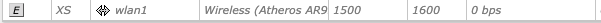

Se connecter à un appareil MikroTik#
Les bornes MikroTik ont leur propre interface. Sur cette page, nous allons voir comment s’y connecter pour pouvoir paramétrer les switch et autre.
Login#
Pour se connecter à l’interface du switch MikroTik, il faut prendre un adaptateur ethernet et se brancher au switch. Ensuite, il faut rentrer l’adresse ip du switch dans un navigateur (on peut voir la fin de l’adresse sur le switch: elle commence toujours par 10.226.xx.xx)
http://10.226.xx.xx
Dans mon exemple, voici à quoi cela ressemblerait:
{kind=link}
Quand vous serez connecté au switch, il faudra vous connecter avec ces identifiants:
Utilisateur: adminl
Mot de passe: 6.67e-11_B32
{kind=link}
Interface#
Après avoir saisi l’identifiant et le mot de passe, vous serez dirigé vers le “dashboard” du MikroTik, qui va ressembler à la photo ci-dessous.
{kind=link}
Maintenant, vérifiez que vous vous trouvez bien dans la section "WebFig" et dans "Interface"
{kind=link}
{kind=link}
Désactiver le wi-fi de la borne#
Pour désactiver le wi-fi de la borne mikrotik, il faut descendre tout en bas sur la même page jusqu’a se retrouver à la ligne “wlan1” de type Wireless:

Et ensuite il faut cliquer sur le petit “D” au début de la ligne (=disable) pour désactiver le wi-fi. Voici à quoi la ligne devrait ressembler:
{kind=link}
Liste des adresses IP des switchs Mikrotik & Netgear#
Voici la liste des adresses IP de chaque borne mikrotik comme certaines n’ont pas d’étiquettes:
Elles commencent toutes par: 10.226.XX.XX
.32.22 - celui en dessous de notre bureau (il s’appelle c02)
.32.23 - c05
.32.30 - b22
.32.31 - b32
.32.35 - b45
.32.46 - spt2
.32.47 - sport3
.32.65 - a19b (celui dans notre bureau sur la petite table)
.32.66 - a18
.32.67 - C26
.32.69 - a16
.32.74 - a34
.32.75 - a36
.32.80 - ar8
Si jamais, voici une liste des adresses IP des switch netgear (dans l’ordre):
10.226.32.91
10.226.32.93
10.226.32.95
10.226.32.97
10.226.32.100
10.226.32.103
10.226.32.104
10.226.32.105
10.226.32.106
10.226.32.110
10.226.32.111
10.226.32.112
10.226.32.113
10.226.32.235
10.226.32.236
10.226.32.237
10.226.32.239
10.226.32.240
10.226.32.241
10.226.32.242
10.226.32.243